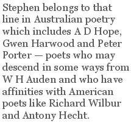

Vivian Smith
Lost in the Foreground launched by Vivian Smith at the Tasmanian Readers’ and Writers’ Festival, Hobart, 30 March 2003
Stephen Edgar Lost In The Foreground, Duffy & Snellgrove, Sydney 2003
This is a special and happy occasion for me to be launching Stephen’s very fine book here in Tasmania. When I moved to Sydney over thirty years ago, the literary situation here was very different. Little did I imagine that I would one day be returning to launch a book of poetry at a prestigious Tasmanian-international festival of the arts, or that such a vibrant literary life would develop here over the years. Tasmania now has a viable publishing set-up, and Hobart is now the home of an outstanding literary journal, Island, that has been growing and changing for more than twenty years. Nothing has stood still. It is unusual for me too because I belong to the pre-book launch generation. When I was a young writer and bringing out my first book there was simply no question of a book launch — the event did not exist — and neither did arts festivals or readings or promotion and signing tours. You published your book if you were lucky, the publisher sent out review copies, if you were lucky, you sent copies to friends and then you got on with your work and hoped that poems you had written would make their way, like stray dogs, to readers who liked them. Even for the big names of the time — Patrick White, Judith Wright, A. D. Hope — there was no question of a launch and no literary circuit. We now live in a vastly changed economic and literary climate and the status of Australian writing has changed enormously. We now have a situation where thousands of people can have heard of a writer and yet have never read a word of his or her work and have no intention of doing so. But what writers want and most need are readers.
As Auden wrote, “Poetry cannot be hung as a status trophy by rising executives, / cannot be ‘done’ like Venice / or abridged like Tolstoy, but stubbornly still insists upon / being read or ignored.”
Stephen moved to Hobart from Sydney a few years after I moved from Hobart to Sydney and our paths have only crossed a little in those years. I am pleased to remember that when I was a literary editor I accepted some of his early work and I included some of his poems in anthologies I was asked to edit in the late 1980s. Stephen’s work immediately impressed. Here was music, structure, intelligence, poetry that knew about poetry, and here was an extraordinarily accurate recording eye. I remember one of his very early poems about some nasturtiums growing wild and how raindrops had been held in the leaves and then how they slowly ran off. Here was a poet who knew how to look and listen and how to transmit those experiences through words. His writing has gone from strength to strength, and now in this his fifth book he has produced a collection of great finesse and distinction.
Stephen belongs to that line in Australian poetry which includes A D Hope, Gwen Harwood and Peter Porter — poets who may descend in some ways from W H Auden and who have affinities with American poets like Richard Wilbur and Antony Hecht. These are poets for whom the technical aspects of poetry, the exploration of particular forms, complex and intricate rhyme schemes, often of immense elaboration, are inseparable from what they have to say: there is no separating what they say from the way they say it. A good example is “Silk Screen” where the formal elaboration is part of the long delay of the poem which leads to its final revelation. For me this a magical poem, concerned like some of A D Hope’s poems with the nature of artistic vision. The wonder of Stephen’s poem — if I have understood it correctly — is that his description of a quiet Sunday afternoon in Hobart becomes inseparable from its evocation of an Oriental screen depicting a landscape roll identical with the view of Hobart seen through his window. Its sense of muted and fading winter color is unique in Australian poetry.
There is no poetic form of importance not explored in Stephen’s work. In this book he moves from the terza rima to blank verse, from sonnets to odes with extraordinary ease. Technical skill, variety of verse forms, intricate patterning are the hallmarks of his work. I do not want to use the word virtuoso because that suggests technique for technique’s sake. What we have here, in poem after poem, is an inevitable merging of form and content.
This book is full of learning and knowledge as well as felt experience and transmuted emotion. It ranges across the world-from South America to Africa, from central Europe to Ancient Egypt — but there is another aspect of it which has a particular appeal for me. Tasmania is not mentioned by name and only two particular places are mentioned — one of them Oyster Cove in the beautiful elegy dedicated to the memory of Gwen Harwood; the other Droughty Point — but Hobart, the Derwent and Mount Wellington are everywhere present, unmistakable though nowhere named. (And I can’t resist mentioning that Stephen has an eye for grass in the way that some other poets have an eye for the moon or the sea.) Poems exploring questions of memory, perception and identity are always given a local habitation — which is not named — but will be easily recognised by those who know Mount Wellington and the River Derwent in their many moods. There is a great feeling for stillness in these poems as well as for the most subtle movements.
It will be clear from what I’ve already said, that this is a very varied book. Some poems like the elegies are immediate in their impact; others are enigmatic and puzzling, some are of the most demanding gravitas, others are full of quiet humor.
It is now widely recognised that the last twenty years have been an amazingly rich time in the history of Australian poetry, with the emergence of a new generation of poets quite unlike any others, and many now in full maturity in their forties and fifties. There has never been a situation quite like this in the history of Australian poetry. Stephen’s book holds an important place in it. Buy it, and read it, and see for yourselves.
Vivian Smith was Reader in English at the University of Sydney until he retired in 1996. He is the author of numerous books on Australian poetry and literary culture, and seven books of poetry, most recently the collection Along the Line, Salt Books, and the CD The Other Side of Things, River Road Records. He has edited and co-edited a number of anthologies of Australian Poetry including Windchimes: Asia in Australian Poetry, Pandanus Books, Canberra, and a special number of Southerly devoted to translations.
|